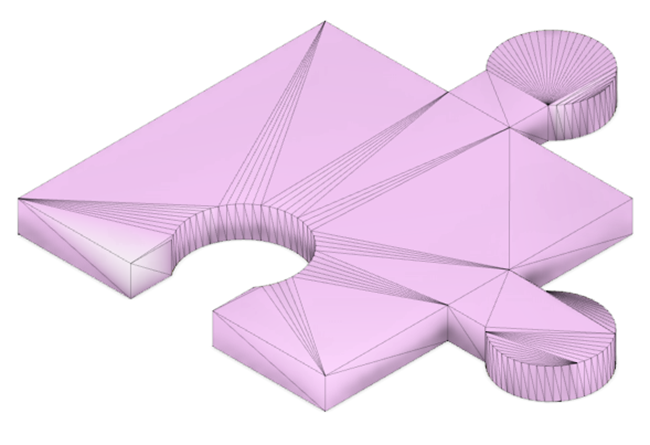

Unsere Schule verfügt über einen Drucker des Typs Bambu Lab X1 Carbon. Das Gerät ist mit einer Filamentwechseleinheit ausgestattet und kann somit mehrfarbig drucken. Die Wilhelm-Stemmer-Stiftung hat uns den Kauf dieses Hochleistungsdruckers ermöglicht.
Von den Seiten Thingiverse und Printables könnt ihr fertige Vorlagen zum Ausdrucken herunterladen.
Die Dateien sind in der Regel im STL-Format gespeichert. Hier werden alle Flächen als Kombinationen von rechtwinkligen Dreiecken angenähert:

3D-Objekte werden mit CAD-Software konstruiert. Wir arbeiten mit der Software Onshape, die vollständig in der Cloud läuft. Aus diesem Grund muss kein Programm auf dem Rechner installiert werden und die Hardware des Rechners muss nicht besonders gut sein.
Zur Arbeit mit Onshape müsst ihr euch auf dieser Seite registrieren: onshape.com/de/sign-up. Die Verwendung der Software ist für private Zwecke kostenlos.